Recognising the awareness gap
The starting point: why devices are stored, discarded or handled without enough information.
CAMPAIGN
NOVARA's evolving journey from asking questions to starting conversations.
OUR JOURNEY · DATES AWAITING REVIEW
The starting point: why devices are stored, discarded or handled without enough information.
Team-supplied notes describe surveying 3,000+ students; methodology remains required for public verification.
Campaigns, workshops and community engagement are presented here as team-supplied activity records.
Development of a proposed smart kiosk concept—not a deployed service.
Planned 1M1B Impact Summit participation on 20 November 2026, subject to confirmation.
CAMPAIGN GALLERY
Photographs supplied by the team. Captions describe the visible activity; event dates and names can be added when confirmed.
Explore Our Work →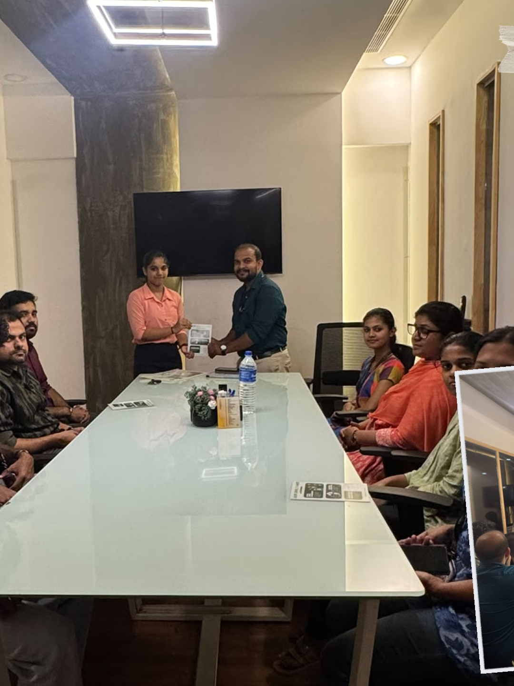

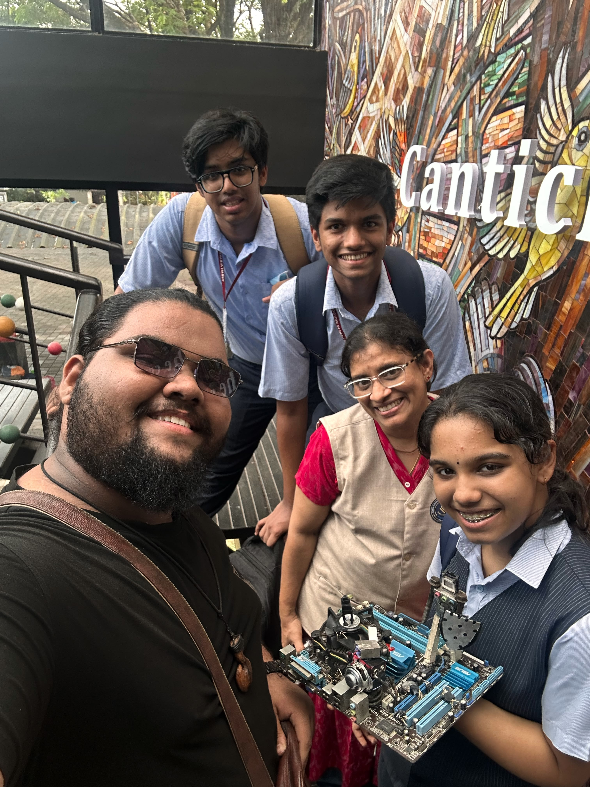

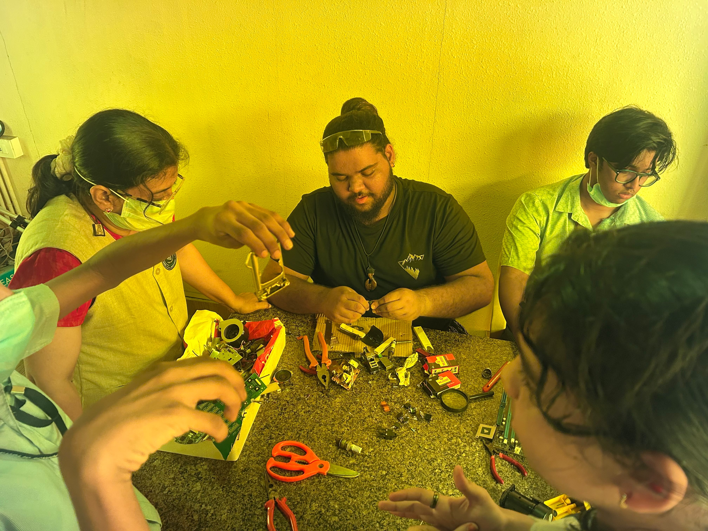
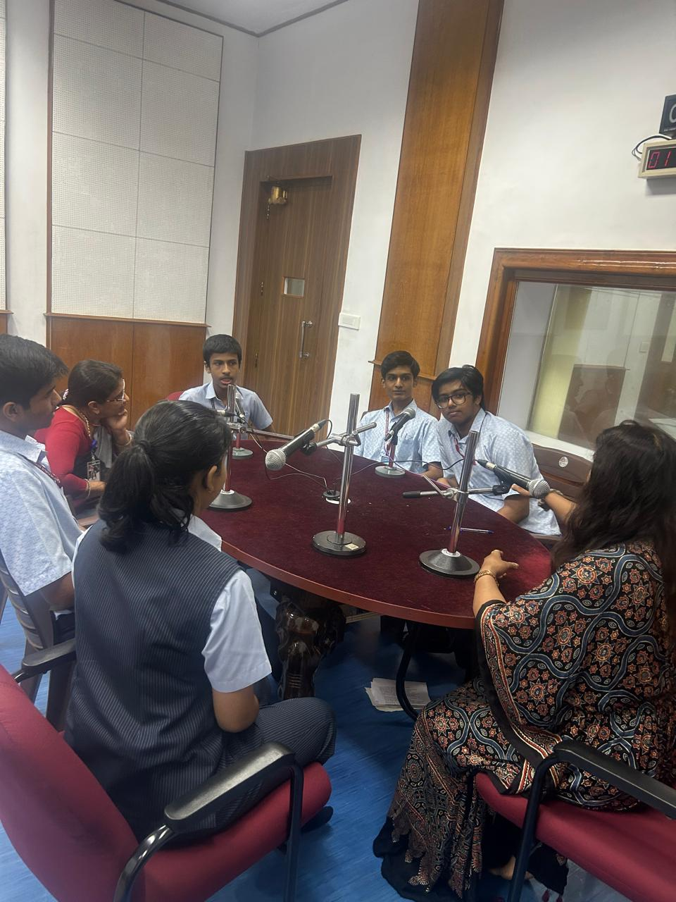
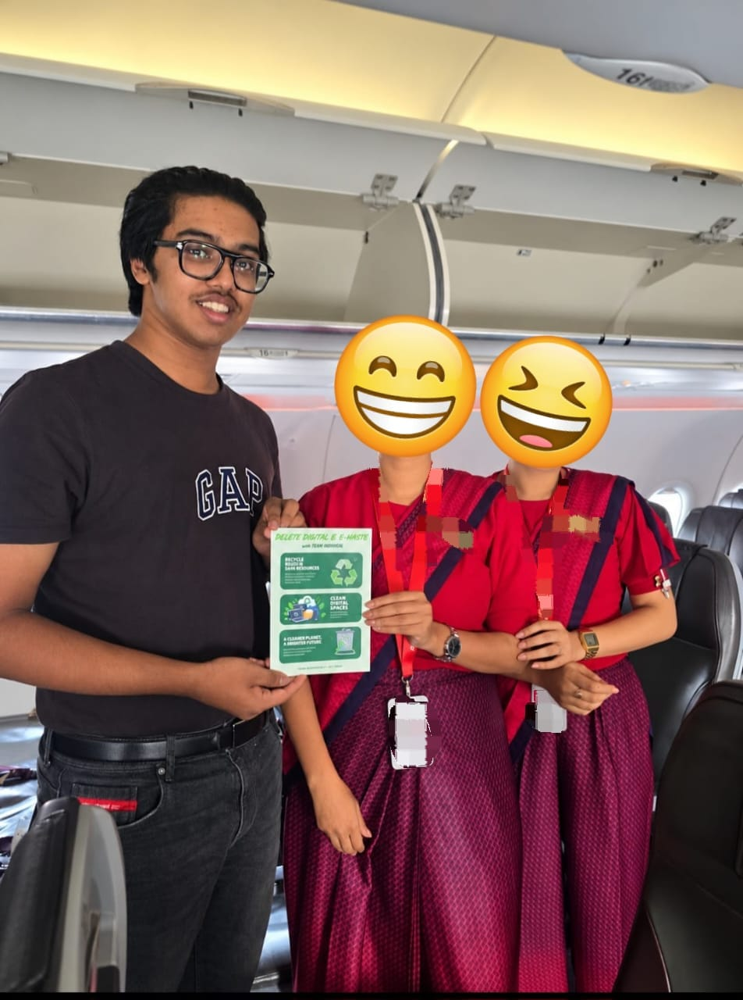
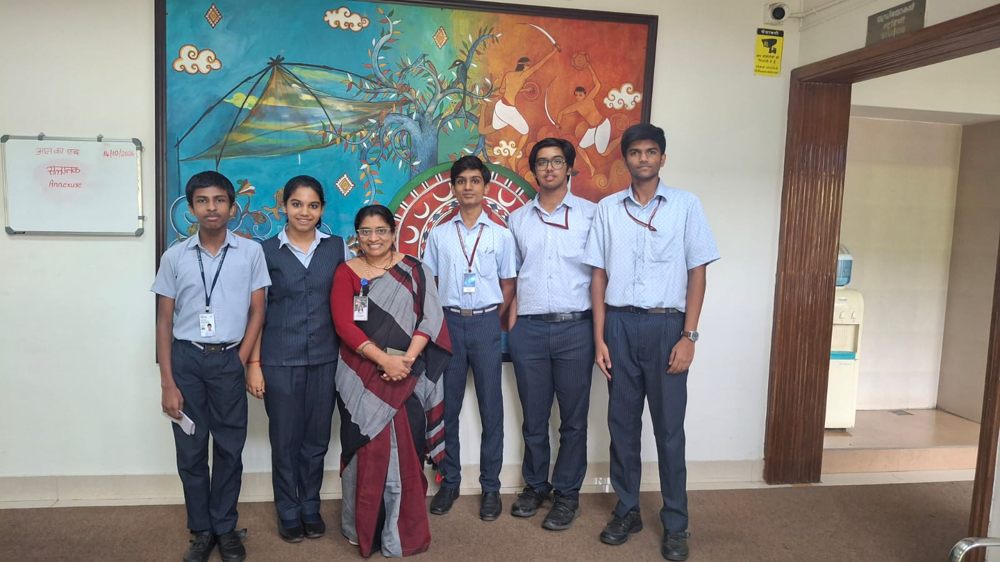
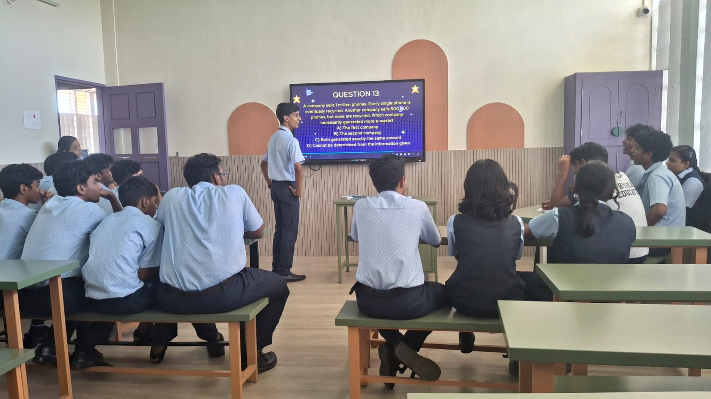
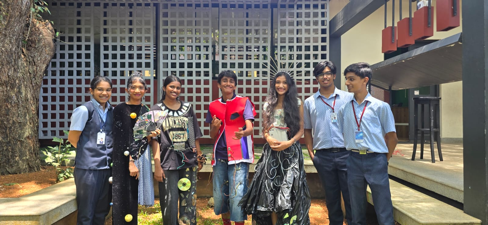

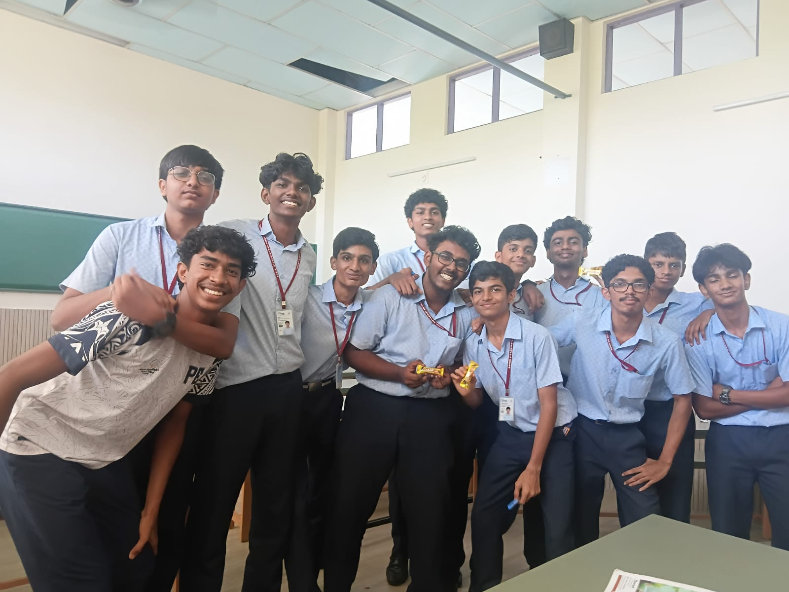
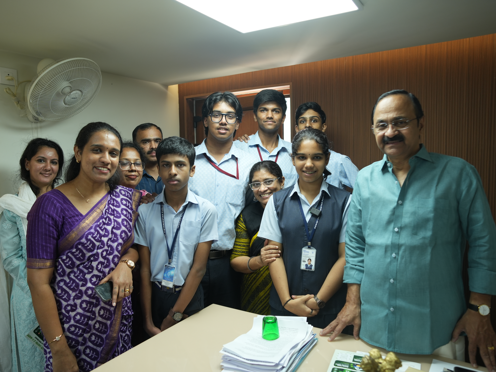
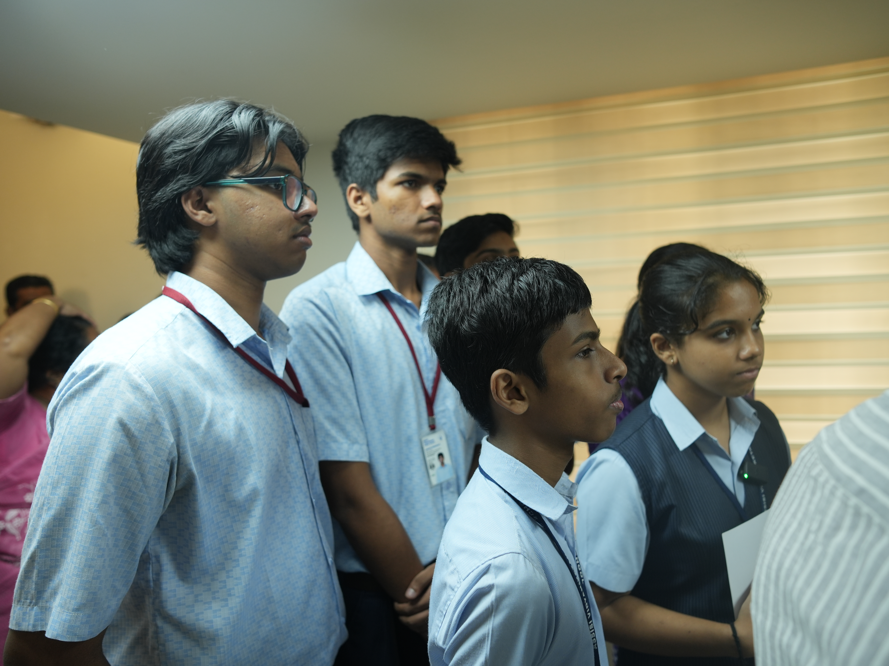
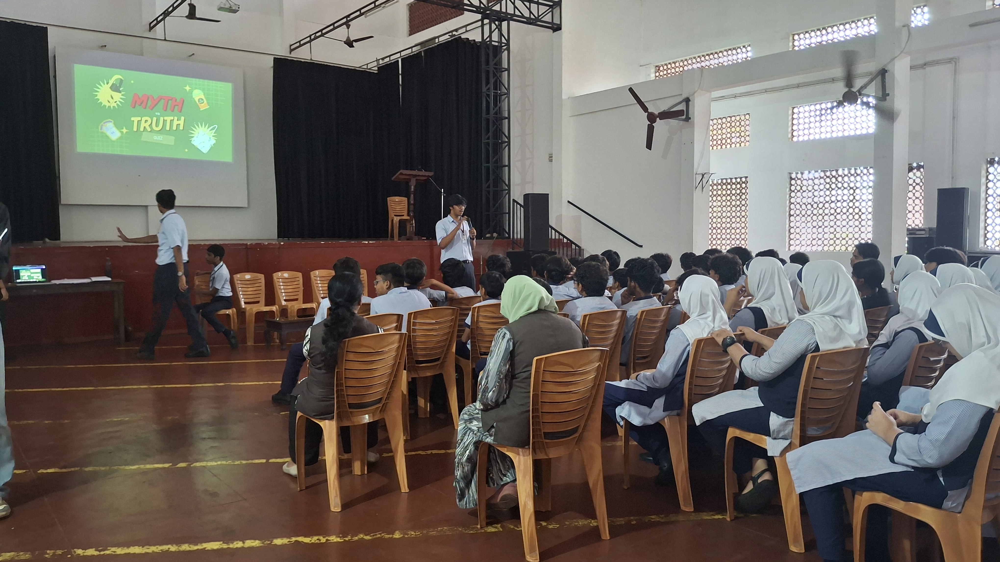